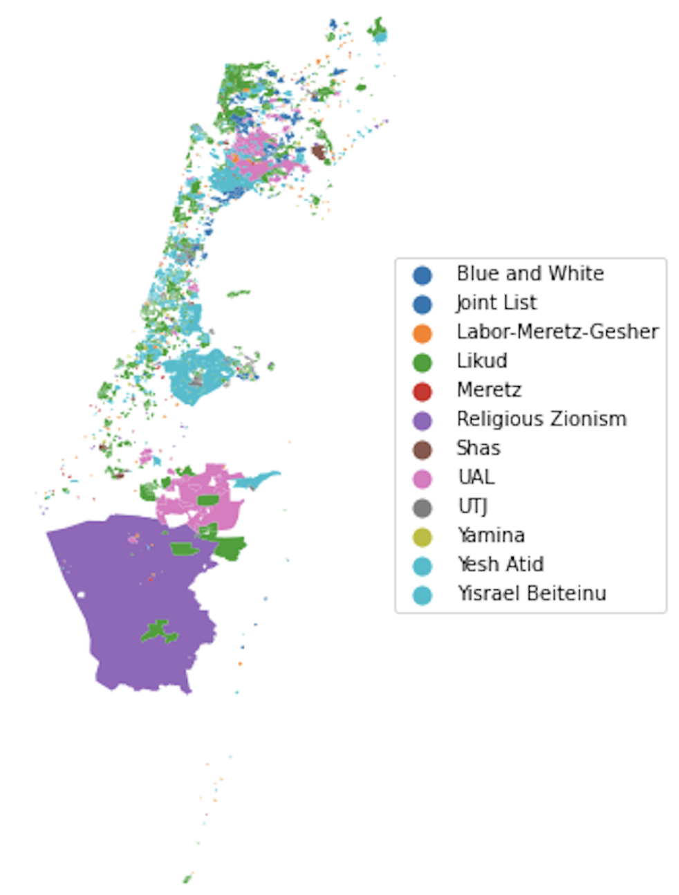
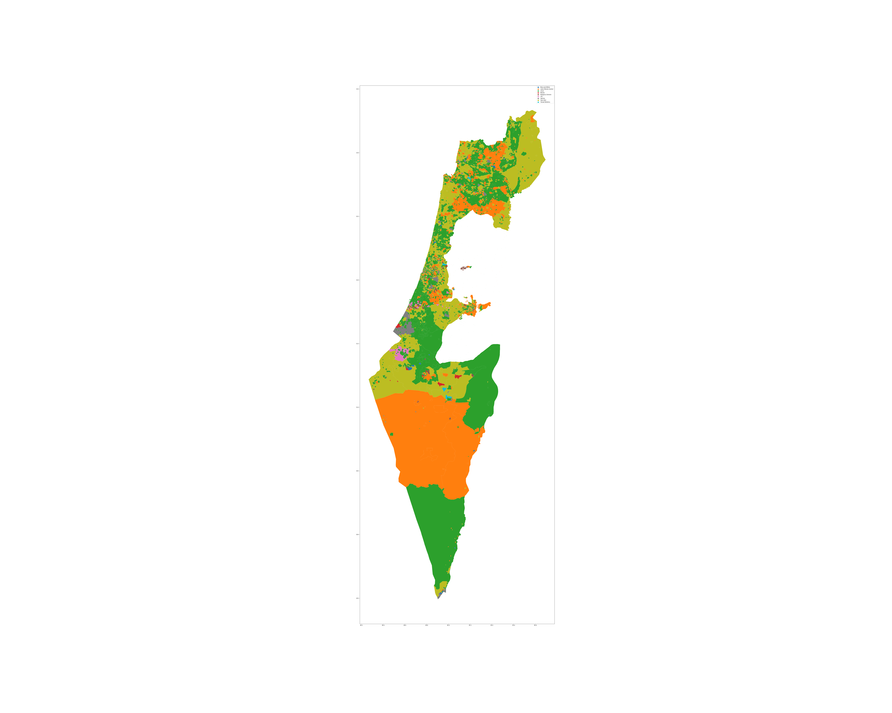

The constituencies of Israel
June 6, 2024
This project tries to simulate what the latest Israeli election would have been like under a single-member electorate system. If we use a “first-past-the-post” element in each electorate, we end up with a system very similar to the system that chooses the House of Commons of the United Kingdom; since we want to retain the current size of the Knesset, we assume 120 constituencies, which we explicitly create on the map using data from the Knesset and census websites. We are going to be using three data sources in this project:
- Statistical areas. A list of “statistical areas”, which are the smallest districts that the Israeli government collects high-level demographic data on, and for which there is an accompanying shapefile available on the Israeli statistics bureau website. There are 3187 of these areas around the country. These statistical areas do not include many settlements in the West Bank, but do include the Golan Heights, East Jerusalem, and several of the large settlement blocs.
- Votes by polling place. A table of votes for each of the 39 “ptakim”, or symbols representing party tickets in the elections for the 24th Knesset in March 2021, aggregated by “kalpi”, or polling place. There are over 12,000 of these around the country, including all around the West Bank, in all the settlements where Israeli citizens live. This data is available from the Knesset’s website.
- Addresses of polling places. A list of all the polling places and their physical address, in Hebrew. This is also available from the Knesset’s website.
Statistical areas
We read the file containing the “layer” of the statistical areas. This is a Geodatabase file containing geometric information about each area, stored as a polygon in the geometry column, some metadata about each area, and demographic statistics (breakdowns by gender and age, and whether the area is populated by Jews or not). Of the demographic data, we only require the total population column for this project, to allow us to cluster statistical areas together into electorates, so we only select the metadata, the total population and the geometry.
We plot these areas coloured by the population column just to check we are onto something.

Polling place locations
The data from the Knesset website gives addresses (in Hebrew) for each polling place. We are going to use a geocoding API to get the latitude and longitude coordinates of each polling place. This will allow us to associate each polling place to a unique statistical area.
I first tried using Here for the geocoding API. It actually took some searching to find something that worked well in Hebrew, was decently accurate, free and not Google. I got what seemed like pretty decent results with this free API, with the geocoding succeeding 84% of the time. Note that’s still almost seven hundred addresses I would need to encode manually (or with a better API) however.
Then I looked at the data, and noticed much of it was completely wrong. At first I used just the address and town fields to build the address; with this I managed to tag 84% of the polling places. When I added the “location” field as well, I actually got worse results, I guess because I was confusing the API.
So in the end, with my tail between my legs, I signed up for Google Cloud Platform and used about 30 of my 300 USD credits doing the geocoding through the best geocoding API money can buy. You really cannot come close to Google and it’s a bit scary how good they are. I got 97.2% of the addresses coded, leaving me with only 122 to encode manually.
1def get_geopoints_for_polling_places(df) -> pd.DataFrame:
2 token = config['tokens']['here_api_key']
3 google_token = config['tokens']['google_key']
4 geopoints = {}
5 df['address'] = df['מקום קלפי'] + ', ' + df['כתובת קלפי'].str.replace(',',' ') + ', ' + df['שם ישוב בחירות']
6 num_unique_addresses = len(df['address'].unique())
7 total_addresses = len(df['address'])
8 print(f'Starting for {num_unique_addresses} unique addresses ({total_addresses} total)')
9 for address in df['address'].unique():
10 url = f'https://maps.googleapis.com/maps/api/geocode/json?address={address}&key={google_token}'
11 response = requests.get(url).json()
12 try:
13 pt = response.get('results')[0].get('geometry').get('location')
14 lat, lng = pt['lat'], pt['lng']
15 print(f'Got lat,lng ({lat}, {lng}) for address {address}')
16 except:
17 lat, lng = 0, 0
18 print(f'Failed to get lat,lng for address {address}')
19 geopoints[address] = [lat, lng]
20 time.sleep(1)
21 df['geo_pts'] = df['address'].apply(lambda x: geopoints.get(x, None))
22 df.to_csv('with_geopts.csv')
23 return df
24pp_locs = get_geopoints_for_polling_places(pp_locs)1#+RESULTS:
2Starting for 4352 unique addresses (12127 total)
3Got lat,lng (31.7946846, 35.2223086) for address סמינר בית יעקב - עטרת חן, מגן האלף 1 , ירושלים
4Got lat,lng (31.7945351, 35.2202451) for address ת"ת זיכרו תורת משה, פישל אהרן 29 , ירושלים
5Got lat,lng (31.78370409999999, 35.2245094) for address משרד החינוך, שבטי ישראל 27 , ירושלים
6Got lat,lng (31.7948576, 35.2201558) for address בי"ס יסודי בית מרגלית, נטר 40 , ירושלים
7...
8: Found locations for 11971 out of 12127 polling places (98.7%).
9: Found locations for 4230 out of 4352 unique addresses (97.2%).Let’s plot the points we got just to see everything looks right.

Get the statistical area for each polling place
The statistical areas file is in a special Israeli projection and we need to convert it to the usual WSG84 system using .to_crs() before we are able to run the “within” command to see which area the polling places belong to.
1from shapely.geometry import Point, MultiPolygon
2pts = []
3polys = []
4poly_ids = []
5
6statistical_areas = statistical_areas.to_crs("EPSG:4326")
7statistical_areas['area_id'] = statistical_areas['YISHUV_STAT11']
8statistical_areas_polygons = [(MultiPolygon(row['geometry']), row['area_id']) for _, row in statistical_areas.iterrows()]
9for i, row in pp_locs.iterrows():
10 pt = Point(float(row['Longitude']), float(row['Latitude']))
11 pts.append(pt)
12 polys_containing = [statistical_areas_polygon for statistical_areas_polygon in statistical_areas_polygons if pt.within(statistical_areas_polygon[0])]
13 if len(polys_containing) >= 1:
14 polys.append(polys_containing[0][0])
15 poly_ids.append(polys_containing[0][1])
16 else:
17 polys.append(0)
18 poly_ids.append(0)
19pp_locs['pt'] = pts
20pp_locs['poly'] = polys
21pp_locs['poly_id'] = poly_ids
22pp_locs.to_csv('with_polys.csv')1: Found a single polygon match for 11718 out of 12127 polling places (96.6%).
2: Found a single polygon match for 4103 out of 4352 (unique) polling place addresses (94.3%).Note that we expected to see fewer matches here (an additional 117 on top of the 122 the geocoding failed for), since there are polling places scattered throughout the West Bank clearly not associated to any statistical area.
Load the results
We are going to load the results and then join the statistical area data and group by.
1def get_votes_by_polling_place() -> pd.DataFrame:
2 votes_pp = pd.read_csv(config['files']['polling_place_results'])
3 votes_pp.columns = VOTES_COLUMNS
4 return votes_pp
5
6results = get_votes_by_polling_place()
7results['id'] = results['Semel Yishuv'].astype(str) + '_' + results['Kalpi'].astype(str)
8pp_locs['id'] = pp_locs['סמל ישוב בחירות'].astype(str) + '_' + pp_locs['סמל קלפי'].astype(str)
9master_df = results.merge(pp_locs, on='id')
10master_df.to_csv('master.csv')
11
12master_df = pd.read_csv('/Users/clinton/Documents/technical/dev/israel_constituencies/master.csv')
13master_df_grouped = master_df.groupby('poly').agg('sum').reset_index()
14master_df_grouped.to_csv('/Users/clinton/Documents/technical/dev/israel_constituencies/master_agged.csv')
15master_df_grouped['winner'] = master_df_grouped[['Labor-Meretz-Gesher', 'Yamina', 'UTJ', 'Joint List', 'The Israelis',
16 'Tzomet', 'Religious Zionism', 'Pensioners', 'New Economic',
17 'Common Alliance', 'Human Dignity', 'Bible Bloc', 'Social Leadership',
18 'Jewish Heart', 'Me and You', 'Blue and White', 'Yisrael Beiteinu',
19 'Likud', 'Meretz', 'Kama', 'New World', 'Us', 'UAL', 'Yesh Atid',
20 'Pirate Party', 'Atzmeinu', 'Maan', 'Hetz', 'Daam',
21 'Impossible Possible', 'Shama', 'New Order', 'Mishpat Tzedek',
22 'Rapeh only Health', 'Hope for Change', 'Am Shalem', 'Democratic',
23 'Shas', 'New Hope']].idxmax(axis=1)
24geometries = []
25for i, row in master_df_grouped.iterrows():
26 try:
27 geometries.append(shapely.wkt.loads(row['poly']))
28 except Exception as e:
29 print(e)
30 geometries.append(shapely.geometry.Point(0,0))
31master_df_grouped['geometry'] = geometries
32gdf = gpd.GeoDataFrame(master_df_grouped, geometry=master_df_grouped['geometry'])
33gdf.plot('winner', figsize=(100, 80), legend=True)
34fname = '/Users/clinton/roam/img/winner_by_area.png'
35plt.savefig(fname)
This map has a lot of holes, and it’s because of this:
: Statistical areas: 3187.\nStatistical areas with no polling place: 2232There are 955 “statistical areas” without a single polling place inside. These areas are presumably unsettled. Again, note also most of the West Bank polling places are not in statistical areas.
Clustering statistical areas into electorates
Our next task is to create 120 electorates. I want to do this by creating 120 electorates of roughly equal population by combining statistical areas together. I hadn’t really thought about it, but when I started thinking about how to implement this and researching stuff online, I pretty soon realised that this is exactly how actual electoral districts are drawn up in countries that have them, and there is quite a large body of research into this interesting and difficult problem.
I found quite a lot of papers on this topic, and decided to implement one of them for this project.

pt lat lon pop
1832 POINT (34.84705 32.11380) 34.847047 32.113803 0.0
1106 POINT (35.06788 31.83234) 35.067884 31.832340 459.0
1158 POINT (34.96183 32.05623) 34.961826 32.056226 8265.0
584 POINT (35.59046 32.80892) 35.590458 32.808920 0.0
128 POINT (34.86173 32.23449) 34.861726 32.234494 234.0
155 POINT (35.35933 32.54880) 35.359333 32.548795 496.0
278 POINT (35.01032 32.79270) 35.010324 32.792704 3876.0
2470 POINT (34.81190 31.94621) 34.811897 31.946212 5259.0
728 POINT (35.51253 32.71081) 35.512529 32.710809 4333.0
189 POINT (35.38535 32.95847) 35.385350 32.958470 0.0Implementing some districting algorithms
We are going to be using the following method from Cohen-Addad et al’s paper (p12):
Computing a balanced centroidal power diagram for \(P\)
A balanced centroidal power diagram is an augmented power diagram \(P(C,w,f)\) such that \(f\) is both balanced and centroidal. We implement the following capacitated variant of Lloyd’s method to compute such a diagram, given \(P\) and the desired number \(k\) of centers. Starting with a sequence \(C\) of \(k\) randomly chosen centers, repeat the following steps until Step (2) doesn’t change C:
- Given \(C\), compute a minimum-cost balanced assignment $f: P \to C$.
- Move each center $x\in C$ to the centroid of the residents that \(f\) assigns to it.
Each iteration except the last reduces the cost, $\sum_{y\in P} d^2(y,f(y))$, and at termination, the pair \((C,f)\) is a local minimum in the following sense: by just moving the centers in \(C\), or just changing \(f\) (while respecting the balance constraint), it is not possible to reduce the cost.
We solve the problem in Step (1) by reducing it to minimum-cost flow; yielding both the stipulated f and (via the dual variables) weights \(w\) such that \(P(C,w,f)\) is a balanced power diagram. Note that the solution obtained by minimum-cost flow assigns assigns each person to a single district. In the last iteration, Step (2) does not change \(C\), so \(f\) is also centroidal, and at termination \(P(C,w,f)\) is a balanced centroidal power diagram, as desired.
So our steps will be:
- create an initial random collection of centres
- create a polygon for the whole of Israel
- randomly choose 120 points
- implement the MCF balanced assignment optimizer
- implement the iteration
Creating an initial random collection of centres
1statistical_areas['const'] = 0
2fig, ax = plt.subplots(figsize=(15, 15))
3
4full_country = statistical_areas.dissolve(by='const').to_crs("EPSG:4326")
5full_country.plot(ax=ax)
6fname = 'israel_polygon.png'
7x_min, y_min, x_max, y_max = full_country.total_bounds
8
9n = 500
10x = np.random.uniform(x_min, x_max, n)
11y = np.random.uniform(y_min, y_max, n)
12
13gdf_points = gpd.GeoSeries(gpd.points_from_xy(x, y))
14gdf_points = gdf_points[gdf_points.within(full_country['geometry'].iloc[0])].head(120)
15assert len(gdf_points) == 120
16gdf_points.plot(ax=ax, color='red')
17plt.savefig(fname)

Implementing the MCF balanced assignment optimizer
At the start I wanted to use Python MIP to formulate the LP.
I am currently stuck trying to understand how to get this to work with “census blocks” like the data I have: even though this is how they have the data in the paper too, I don’t understand the \(\mu_x\) in their MCF formulation.
This is an important quote: Fix a threshold \(\lambda\). The dynamic program will determine whether there is an assignment of census blocks to districts so that the maximum discrepancy is at most \(\lambda\).
1for_districting_algo['pop'] = for_districting_algo['pop'] / 10.0
2model = mip.Model(solver_name=mip.CBC)
3ayxs = np.full((int(sum(for_districting_algo['pop'])), 120), fill_value=None)
4for i in range(0, len(for_districting_algo)):
5 for j in range(0, int(for_districting_algo['pop'].iloc[i])):
6 for k in range(120):
7 ayxs[i+j][k] = model.add_var(var_type=mip.BINARY,
8 name=f'a_{i}+{j}_{k}')
9
10mu_xs = [model.add_var(var_type=mip.INTEGER,
11 name=f'mu_{i}')
12 for i in range(120)]
13
14under = [model.add_var(name=f'under_{i}')
15 for i in range(120)]
16
17dist_matrix = np.full((int(sum(for_districting_algo['pop'])), 120), fill_value=0)
18for i in range(0, len(for_districting_algo)):
19 for j in range(0, int(for_districting_algo['pop'].iloc[i])):
20 for k in range(120):
21 dist_matrix[i+j][k] = for_districting_algo['pt'].iloc[i].distance(gdf_points.iloc[j])
22
23
24for k in range(120):
25 model += mip.xsum([for_districting_algo['pop'].iloc[i] * ayxs[i+j][k]
26 for i in range(0, len(for_districting_algo))
27 for j in range(0, int(for_districting_algo['pop'].iloc[i]))]) == mu_xs[j]
28
29for j in range(112):
30 model += (mu_xs[j] - X <= under[j])
31 model += (X - mu_xs[j] <= under[j])
32 #model += (mu_xs[j] - over[j] == X)
33
34for j in [112, 113, 114, 115, 116, 117, 118, 119]:
35 model += (mu_xs[j] - X - 1 <= under[j])
36 model += (X + 1 - mu_xs[j] <= under[j])
37 #model += (mu_xs[j] - over[j] == X + 1)
38
39model += mip.xsum(mu_xs) == M
40
41for i in range(0, len(for_districting_algo)):
42 for j in range(0, int(for_districting_algo['pop'].iloc[i])):
43 model += mip.xsum([ayxs[i+j][k] for k in range(120)]) == 1
44
45model.objective = mip.minimize(mip.xsum([dist_matrix[i+j][k] * ayxs[i+j][k] for i in range(0, len(for_districting_algo))
46 for j in range(0, int(for_districting_algo['pop'].iloc[i]))
47 for k in range(120)]) + 10 * mip.xsum([under[i] for i in range(120)]))
48
49status = model.optimize(max_seconds=10800)But after I went through the paper again I realised the whole point of the first “phase” of their algorithm is that you allow census blocks to be split, so you need LP variables for each of the population. So probably I need to use a MCF implementation; I would like to try OR-tools at first.

I didn’t completely get to finish this project, but the above picture gives the basic idea, it’s just missing the final “contiguity” constraint which is harder to encode. I didn’t get around to this yet, but if someone else would like to pick up from here I would be very keen to see a final map!